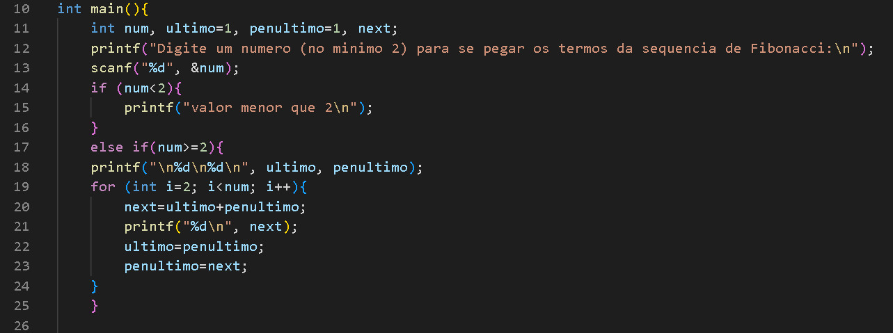
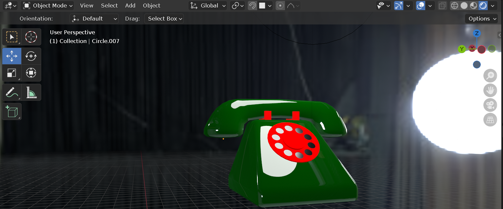

TRABALHOS DESTAQUES:
- PROJETOS WEB COM CSS E JAVASCRIPT
- Uma calculadora na web com programação em Javascript e formatação em CSS
- Este site, realizado usando HTML e CSS. Nenhum template foi usado, apenas código.
- C:
- Calculadora feita em C com uso de switch:
- Os n primeiros termos da sequência de Fibonacci, sendo n um input do usuário:
- PYTHON:
- Joquempô programado em python, com possibilidade de jogada entre jogadores, jogador vs pc ou pc vs pc:
- Uma máquina de bebidas registrada em matriz, com valores constantemente atualizados com base nos inputs do usúario. Há também a possibilidade de manipulação total da matriz com o modo de administrador, a fim de alterar estoques, preços e adições de produtos. O código realiza a contagem dos IDs dos elementos da matriz de forma automática:
- PROJETOS EXTRAS:
- Participação em simulações da ONU, 6 vezes como delegado, 2 como diretor.
- Modelagem 3D em Blender, nível iniciante:





